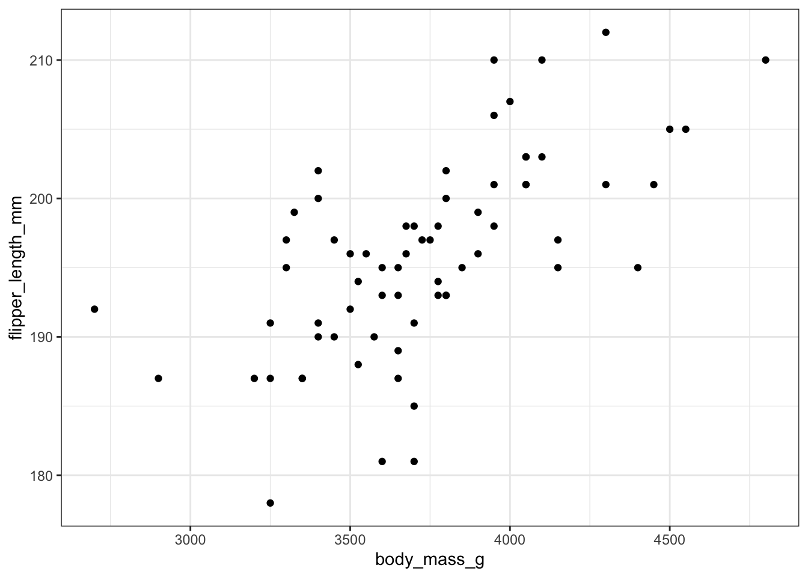

library(palmerpenguins)
chinstrap <- subset(penguins, species == "Chinstrap")Lab 09: Correlation
Goals
- Calculate a correlation coefficient and the coefficient of determination
- Test hypotheses about correlation
- Use the rank-based correlation when normality assumptions are not met
Learning the Tools
This week and next week we will look at methods to understand the relationship between two numerical variables, using correlation and regression.
To demonstrate the new R commands this week, we will use the penguin data set from the palmerpenguins package in R. These data record the measurements of different body dimensions of three species of penguins. For simplicity, we will focus just on the chinstrap penguin. Let’s first load the package and subset the data to just chinstraps.
Let’s look at the correlation between body mass and flipper length. We might expect the heavier the penguin, the bigger the flippers it needs. But before we go further, it is wise to plot a scatterplot to view the relationship of the two variables.
ggplot(chinstrap, aes(x = body_mass_g, y = flipper_length_mm)) +
geom_point() +
theme_bw()
These data seem to have a moderately strong, positive relationship. Note: this is just an exploratory plot, we haven’t made it look high quality, we’re just getting a sense of what the data look like.
Calculating a correlation coefficient in R is straightforward. The function cor() calculates the correlation between the two variables given as input:
cor(chinstrap$body_mass_g, chinstrap$flipper_length_mm)[1] 0.6415594As we predicted from the graph, the correlation coefficient of these data is positive and fairly strong.
To test a hypothesis about the correlation coefficient or to calculate its confidence interval, use cor.test(). It takes as input the names of vectors containing the variables of interest.
cor.test(chinstrap$body_mass_g, chinstrap$flipper_length_mm)
Pearson's product-moment correlation
data: chinstrap$body_mass_g and chinstrap$flipper_length_mm
t = 6.7947, df = 66, p-value = 3.748e-09
alternative hypothesis: true correlation is not equal to 0
95 percent confidence interval:
0.4759352 0.7632368
sample estimates:
cor
0.6415594 The output gives many bits of information we might want. After, re-stating the names of the variables being used, the output gives us the test statistic t, degrees of freedom, and P-value of a test of the null hypothesis that the population correlation coefficient is zero. In this case the P-value is quite small, \(P = 3.748 \times 10^{-9}\). After that we have the 95% confidence interval for the correlation coefficient and finally the estimate of the correlation coefficient itself.
The name R gives this correlation test is unfortunate. Pearson of course was a terrible eugenicist, and not the only person in the world to ever come up with the idea of correlation. At the very least we know the Indian statistician Anil Kumar Gain developed the same idea. For these reasons, despite the naming convention in R, we will call this type of correlation Product-moment correlation. This is a more descriptive name because the mathematical form of this correlation coefficient comes from multiplying the moments of the data—in statistics, moments are any expression like this \(\sum (Y_i - \bar{Y})^b\) where \(b\) can be any integer. For correlation \(b = 2\).
Rank-based correlation
The function cor.test() can also calculate a rank-based correlation, if we add the option method = "spearman" to the command. Rank-based correlation is helpful when the data are not normally distributed and/or when the relationship between variables is not linear. This is because it looks for a correlation between the ranks (first biggest, second biggest, etc.) of the data values rather than the values themselves.
cor.test(chinstrap$body_mass_g, chinstrap$flipper_length_mm, method = "spearman")
Spearman's rank correlation rho
data: chinstrap$body_mass_g and chinstrap$flipper_length_mm
S = 17264, p-value = 3.983e-10
alternative hypothesis: true rho is not equal to 0
sample estimates:
rho
0.6704871 The output here is similar to what we described above with product-moment correlation. We call this kind of correlation rank-based because that is more descriptive, and again removes the name of a eugenicist (Spearman) who just happened to receive historical credit for this type of analysis.
Activities
Developing an intuition for correlation coefficients.
In a web browser, open the app at http://shiney.zoology.ubc.ca/whitlock/Guessing_correlation/
This app is simple, it will plot some data in a scatterplot, and you guess the correct correlation coefficient for those data. Select one of the three choices and click the little circle next to your choice. Most people find this pretty challenging at first, but that is the point—to let you develop a better intuition about what a given value of a correlation coefficient means for how strong a relationship is between two numerical variables.
Keep trying new data sets (by clicking the “Simulate new data” button) until you feel like you can get it right most of the time.
Questions
1. Telomeres length and aging
The ends of chromosomes are called telomeres. These telomeres are shortened a bit during each cell cycle as DNA is replicated. One of their purposes is to protect more valuable DNA in the chromosome from degradation during replication. As people get older and their cells have replicated more often, their telomeres shorten. There is evidence that these shortened telomeres may play a role in aging. Telomeres can be lengthened in germ cells and stem cells by an enzyme called telomerase, but this enzyme is not active in most healthy somatic cells. (Cancer cells, on the other hand, usually express telomerase.)
Given that the length of telomeres is biologically important, it becomes interesting to know whether telomere length varies between individuals and whether this variation is inherited. A set of data was collected by Nordfjäll et al. (2005) on the telomere length of fathers and their children; these data are in the file “telomere-inheritance.csv”.
- Create a scatter plot showing the relationship between father and offspring telomere length.
- Do the data require any transformation to be bivariate normal before correlation?
- What’s the product-moment correlation between father and offspring telomere length? What’s the null hypothesis? Do you reject or fail to reject the null hypothesis?
2. Brain-body mass allometry in mammals
Larger animals tend to have larger brains. But is the increase in brain size proportional to the increase in body size? A set of data on body and brain size of 62 mammal species was collated by Allison and Cicchetti (1976), and these data are in the data set “mammals.csv”. The file contains columns giving the species name, the average body mass (in kg) and average brain size (in g) for each species.
- Plot brain size against body size. Is the relationship linear?
- Find a transformation (for either or both variables) that makes the relationship between these two variables linear.
- Is there statistical evidence that brain size is correlated with body size? Assume that the species data are independent.